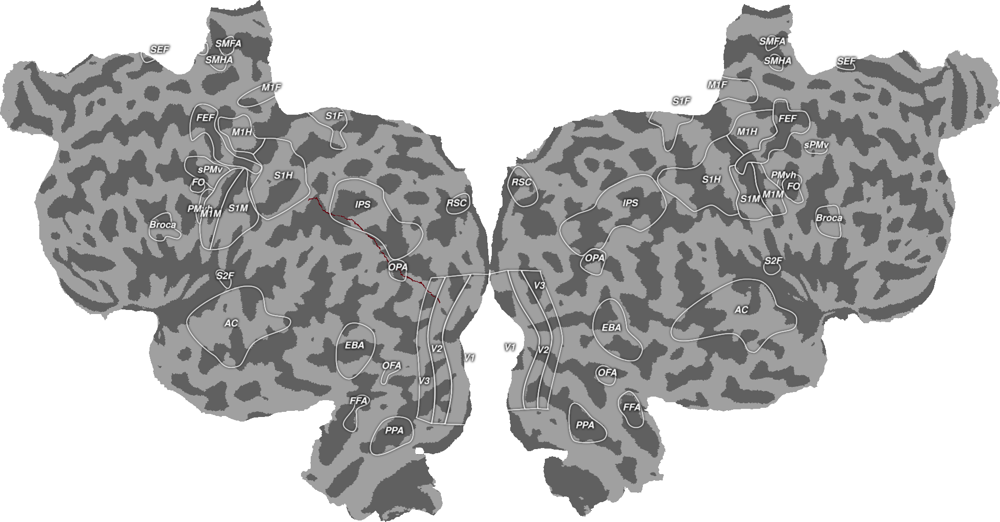

Note
Click here to download the full example code
Plotting Geodesic Paths¶
This will plot a geodesic path between two vertices on the cortical surface. This path is based on geodesic distances across the surface. The path starts at the given endpoint and selects the neighbor of that point in the surface map that is closest to the other endpoint. This process continues iteratilvely until the last vertex in the path is the endpoint you gave to it.
All you need to do is supply a surface object and two vertices on that surface and you can find the geodesic path. This script additionally makes a plot to show all of the vertices listed in the path.
Out:
/home/travis/virtualenv/python3.7.1/lib/python3.7/site-packages/scipy/sparse/linalg/dsolve/linsolve.py:310: SparseEfficiencyWarning: splu requires CSC matrix format
warn('splu requires CSC matrix format', SparseEfficiencyWarning)
import cortex
import cortex.polyutils
import numpy as np
import matplotlib.pyplot as plt
subject = "S1"
# First we need to import the surfaces for this subject
surfs = [cortex.polyutils.Surface(*d)
for d in cortex.db.get_surf(subject, "fiducial")]
numl = surfs[0].pts.shape[0]
# Now we need to pick the start and end points of the line we will draw
pt_a = 100
pt_b = 50000
# Then we find the geodesic path between these points
path = surfs[0].geodesic_path(pt_a, pt_b)
# In order to plot this on the cortical surface, we need an array that is the
# same size as the number of vertices in the left hemisphere
path_data = np.zeros(numl)
for v in path:
path_data[v] = 1
# And now plot these distances onto the cortical surface
path_verts = cortex.Vertex(path_data, subject, cmap="Blues_r")
cortex.quickshow(path_verts, with_colorbar=False)
plt.show()
Total running time of the script: ( 0 minutes 12.936 seconds)